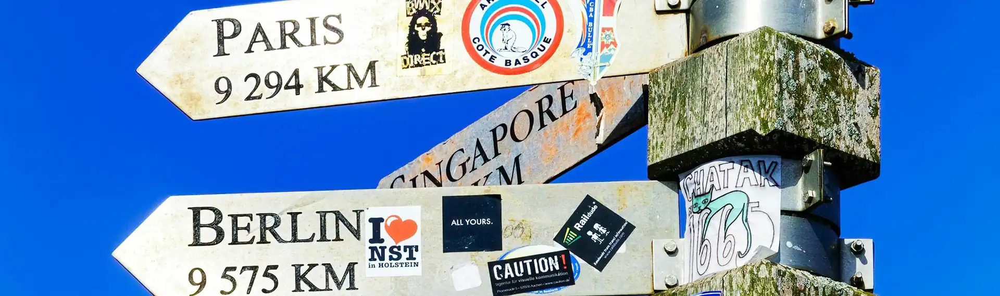

Essential Travel Advice for Backpackers
Festivals & Clubs
South Africa's music culture is one of its least-discussed assets. The country that produced mbaqanga, township jazz, kwaito, Amapiano, and Gqom has a nightlife scene with genuine depth — not just imported DJs playing to tourist crowds, but a living, evolving musical identity that is worth seeking out. The cities are different from each other: Cape Town's scene is more internationally influenced; Johannesburg's is rawer and more African; Durban's is subtropical and rhythm-heavy in a way that is entirely its own.
Read More
THE MUSIC
Amapiano is the dominant sound of South Africa in 2026 — a slow-tempo, log drum-driven house genre that originated in the Pretoria townships in the mid-2010s and has since conquered the country and spread internationally. You will hear it everywhere: in minibus taxis, at braais, in clubs, at petrol stations. It is worth understanding before you arrive — Spotify's Amapiano playlist is a decent introduction.
Gqom is Durban's contribution — a darker, harder, more aggressive electronic sound built on asymmetric rhythms and heavy bass. Where Amapiano is warm, Gqom is abrasive in the best possible way. The Durban club scene is its natural habitat.
Kwaito is the older parent of both — a South African house music that emerged from Soweto in the 1990s, post-apartheid, as the sound of liberation and township youth. Slowed-down house rhythms, township slang, and a swaggering confidence. Still played; still significant.
Township jazz has a lineage stretching back to the 1940s Sophiatown scene — the music of Hugh Masekela, Miriam Makeba, Abdullah Ibrahim. It is performed live in Johannesburg, Cape Town, and Durban at venues worth finding. Ask at your hostel for current recommendations; the live jazz scene shifts frequently.
CLUBS BY CITY
Club listings date quickly — venues open and close, nights move, and a club that was the reference point eighteen months ago may have reinvented itself or disappeared. Treat the listings below as starting points rather than guarantees, and check current status before committing a night to a specific venue.
CAPE TOWN
Modular: A dark, serious underground club dedicated to techno and house. No photography on the dance floor. The kind of place that attracts people who actually care about the music rather than the Instagram backdrop.
Asoka: A long-running fixture in Kloof Street with an outdoor terrace built around a massive old olive tree. Tuesday jazz nights that drift into deep house as the evening progresses. More relaxed than a club, better music than a bar.
The Assembly: Cape Town's best mid-size live music venue, in the old CBD. Hosts local and international acts across genres — check the calendar at theassembly.co.za for what's on during your visit.
Long Street generally: The concentration of bars on Long Street means you can move between venues on foot — but do so in a group and be aware of your surroundings. After midnight the street attracts pickpockets and the occasional more serious incident. Use Uber to leave at the end of the night, not your feet.
JOHANNESBURG
And Club (Newtown): The benchmark for underground electronic music in South Africa. Industrial space, serious sound system, an audience that knows what it came for. ToyToy, the Friday night residency hosted here, is widely considered the best weekly club night in the country.
Kitcheners (Braamfontein): One of the oldest bars in Johannesburg, on the corner of Juta and De Beer streets. Indie, afrobeats, and a sweaty, unpretentious atmosphere that has remained consistent through two decades of Braamfontein's ups and downs.
Melville's 7th Street: Less club, more extended evening — a strip of bars and restaurants where the night builds slowly from dinner to drinks to whatever happens next. The social hub for backpackers staying in Melville.
DURBAN
Florida Road: The axis of Durban's nightlife — a long strip of bars, restaurants, and clubs in Morningside that is active most nights of the week. Safe enough to walk during the evening; use Uber after midnight.
Origin: A multi-room venue hosting everything from Gqom to psychedelic trance to deep house on different floors simultaneously. The place to go if you want to understand the range of the Durban scene in a single night.
Views at 25: A rooftop lounge with skyline views, popular for Sunday afternoon "grooves" — the distinctly Durban tradition of a slow, sociable Sunday afternoon party that drifts well into the evening.
GQEBERHA AND EAST LONDON
Both cities have active nightlife scenes that are almost entirely local rather than tourist-facing — which makes them more interesting, if less navigable. Ask at your hostel for current recommendations; the scenes in both cities shift frequently and local knowledge is essential.
NIGHTLIFE SAFETY
South Africa's nightlife requires a higher baseline of awareness than equivalent scenes in European cities. The rules are an extension of the general urban safety rules, applied to a context where it is late, you may have been drinking, and your guard is naturally lower.
Use Uber between venues and to go home. Do not walk between clubs at night, even for "just two blocks." Wait for your ride inside the venue or its security gates — not on the pavement with your phone in your hand.
Go out in groups. If you are a solo traveller, join a hostel pub crawl or attach yourself to a group you have met at the hostel before heading out. Being alone in a South African nightlife context is a significantly higher-risk position than being with others.
Drink spiking is a documented risk in busy metropolitan venues. Never leave your drink unattended. Never accept a drink from a stranger that you didn't watch being poured and handed directly to you.
Alcohol licensing hours: Liquor stores close at 5pm on Saturdays in most provinces and are closed Sundays — though bars and restaurants continue to serve. Stock up before Saturday afternoon if you are planning a self-catering evening.
MAJOR FESTIVALS (2026)
Up the Creek (February) — Rock, indie, and folk on the banks of the Breede River near Swellendam. The stage is on the water; the audience watches from inner tubes and canoes. One of the most distinctive festival formats in the country.
Website: upthecreek.co.za
Ultra South Africa (March/April) — The South African edition of the global electronic music festival, held in Cape Town and Johannesburg. Massive production, international headliners, and a crowd that has been planning its weekend around this for months.
Website: ultrasouthafrica.com
AfrikaBurn (April/May) — South Africa's answer to Burning Man: a temporary city called Tankwa Town built in the Karoo desert for one week each year, organised around art, radical self-expression, gifting, and communal effort. No spectators — everyone participates. One of the most singular experiences in the country for those willing to commit to the principles and the logistics.
Website: afrikaburn.org
Splashy Fen (Easter Weekend) — South Africa's longest-running music festival, held on a farm in the Underberg foothills of the southern Drakensberg. Folk, rock, and world music in a genuinely beautiful mountain setting. Family-friendly, unpretentious, and consistently good.
Website: splashyfen.co.za
Rocking the Daisies (October) — The Western Cape's flagship lifestyle and music festival, held on a wine farm outside Cape Town. International and local acts, strong production values, and a crowd that takes the fashion as seriously as the music.
Website: rockingthedaisies.com
Surfing
South Africa has one of the great surfing coastlines in the world — over 2,500km of it, exposed to swells from two oceans, ranging from beginner beach breaks to world-tour point breaks. The water temperature splits cleanly along the coast: the Atlantic side is cold (12–16°C year-round, wetsuit essential), the Indian Ocean side is warm (20–26°C in summer, boardshorts possible). Pick your coast based on your tolerance for cold water and your skill level.
Read More
THE BREAKS
Jeffreys Bay (Eastern Cape) is the reason serious surfers come to South Africa. Supertubes — a right-hand point break that peels for up to 300 metres over a shallow reef — hosts the WSL Championship Tour each July and is one of the finest waves in the world when it is working. It is not a beginner wave. The breaks immediately south of Supertubes — Kitchen Windows, Albatross, Boneyards — are progressively more forgiving and offer excellent surfing for intermediate riders. J-Bay as a town has a particular quality: unhurried, permanently salty, full of people who came for two weeks and stayed two months. Island Vibe Backpackers sits directly on the beach and is the natural base.
Victoria Bay (Garden Route) is a small, sheltered cove between Wilderness and George with a consistent right-hand point break that is one of the most popular and accessible waves on the Garden Route. The village is tiny — a handful of holiday houses around a single slipway — and the atmosphere in the water is relaxed. One of the best intermediate waves in the Western Cape.
Muizenberg (Cape Town) is the historic home of South African surfing and the default beginner beach. Long, slow, forgiving waves that break far from shore give learners enough time and space to figure out what they are doing. The water is cold — a 4/3mm wetsuit is the minimum year-round, and in winter a 5/4mm with boots and hood is not overcaution. African Soul Surfer runs lessons and board hire directly on the beach.
Durban has the warmest water and the most urban surf scene. Addington and South Beach offer manageable waves for learners with the convenience of city infrastructure directly behind them. More experienced surfers head to the Bluff or to the point breaks south of the city. The beachfront is lively during the day; apply the usual Durban after-dark rules to the promenade area.
The KwaZulu-Natal South Coast — stretching from Amanzimtoti to Port Edward — is one of South Africa's most consistent surfing regions. The water is warm, the crowds are thinner than in Durban or J-Bay, and the overall quality of the waves is high. Scottburgh has a classic right-hand point; Umzumbe is beloved for its relaxed atmosphere and works across skill levels. Ansteys Beach Backpackers, just south of Durban, is the traditional surf hostel base for the south coast.
Coffee Bay (Wild Coast) offers mellow, uncrowded waves in one of the most remote settings on the surf circuit — a small village on the Eastern Cape's Wild Coast with no through road, warm enough water for boardshorts in summer, and an atmosphere that is the opposite of competitive. Coffee Shack Backpackers has boards for hire and runs lessons.
SHARKS
Shark attacks occur in South Africa and are not worth dismissing. The risk is real and geographically specific. The Eastern Cape — particularly the stretch between East London and Port Alfred, and around the Nahoon River mouth — has historically had the highest incidence of attacks in the country, mostly involving bull sharks in murky river-mouth water. The Western Cape, particularly around Gansbaai and the Cape Peninsula, has white sharks; attacks are rare but have occurred at popular surf spots including Fish Hoek and Muizenberg.
Download the SharkSmart app — it provides real-time shark sighting alerts and beach status for the Western Cape coast. Check it before entering the water at any Western Cape beach. In KwaZulu-Natal, most popular beaches are protected by shark nets and drum lines maintained by the KwaZulu-Natal Sharks Board — look for the shark flag system at the beach (green = nets operational, red = nets not operational or a sighting reported). Avoid surfing near river mouths, in murky water, at dawn and dusk, and in areas where fishing is happening. These are not theoretical precautions.
PRACTICAL NOTES
Gear: Board hire is available at all major surf spots — typically R150–R200/day (€7.50–€10) for a soft-top learner board, more for a performance shortboard. Wetsuit hire is available at Muizenberg and other cold-water spots. If you are particular about your equipment, bring your own — airline board bag fees are generally reasonable on domestic flights, and the quality of hire boards varies.
Lessons: Muizenberg, J-Bay, Coffee Bay, and Ansteys Beach all have established surf schools offering beginner lessons from approximately R350–R500 (€17.50–€25) for a two-hour session including board and wetsuit. Book through your hostel — most have relationships with local instructors and can arrange discounted rates.
Etiquette: Lineups at J-Bay and Vic Bay are localised and the pecking order is real. Don't drop in, don't snake, and if you are not yet at the level for the main break, surf the smaller waves further down the beach until you are. South African surfers are generally welcoming to respectful visitors and unforgiving of those who are not.
Sun: The African sun reflected off water is severe. SPF 50+ zinc or sunscreen on your face, neck, and the backs of your hands before every session — not optional. A rashguard or long-sleeve wetsuit top reduces the burn on your back during a long session.
Getting between spots: The Baz Bus covers Cape Town to Gqeberha and stops near several surf spots on the Garden Route. For J-Bay, Coffee Bay, and the south coast, a hire car or lift-share is the practical option — the surf spots are spread across a long coastline and public transport does not connect them reliably.
Digital Nomads & Remote Work
South Africa has transitioned from a standard "gap year" destination to one of the world's premier digital nomad hubs. For those earning in Dollars, Euros, or Pounds, the "lifestyle arbitrage" here is staggering. You can live in a world-class apartment with mountain views, eat at award-winning restaurants daily, and enjoy a high-speed infrastructure for a third of the cost of a major European city. However, South Africa is not a "plug-and-play" destination like Lisbon or Bali. It requires a specific technical setup to overcome local challenges like load shedding and a very specific approach to personal security.
Read More
THE REMOTE WORK VISA: THE HARD FACTS
After years of talk, the South African government has finally formalized the Remote Work Visitor Visa. This is a game-changer for nomads who previously had to do "border runs" every 90 days. You are no longer required to navigate the vague "embassy advice" loop; here are the specific requirements as of 2024/2025:
The Income Threshold: To qualify, you must prove a minimum gross annual income of R650,000 (approximately $35,000 / €32,000 / £27,000). This must come from a source outside of South Africa. You will need to provide three months of bank statements and an employment contract as proof.
Tax Obligations: If you stay in South Africa for less than 6 months within a 12-month period, you are generally exempt from registering with SARS (the local tax authority). If you stay longer, you may be required to register, though South Africa has double-taxation agreements with many countries to prevent you from being hit twice. Tip: Most nomads stick to the 180-day window to keep their tax life simple.
The "Red Tape" Checklist: Unlike the standard tourist visa, you will need to submit:
• A valid passport (at least 6 months remaining).
• Comprehensive medical insurance that covers you locally.
• A police clearance certificate from your home country (issued within the last 6 months).
• A medical report and a radiology report (specifically a chest X-ray to clear you for TB).
• Proof of accommodation (a lease or a long-term hostel booking).
ESKOM-PROOFING YOUR CAREER
The single biggest threat to your remote job in South Africa isn't crime—it’s Load Shedding. The national power utility (Eskom) frequently cuts power to different areas for 2 to 4 hours at a time to protect the grid. If you are on a Zoom call with a client in London and your power dies, "the dog ate my electricity" is not an excuse they will appreciate. You need a two-tier backup system.
The Router UPS: This is non-negotiable. For around R800 ($45), you can buy a small Uninterruptible Power Supply (UPS) at any Incredible Connection or Takealot. It is a small battery that sits between your wall plug and your Wi-Fi router. When the power goes out, your Wi-Fi stays on for up to 6 hours. Since fiber lines don't rely on the local street's power, you can stay connected even in the dark.
The Power Station (The "Inverter"): If you use a desktop or an external monitor, a small UPS won't cut it. You will need a portable power station (brands like EcoFlow or Gizzu). These are expensive (R5,000+) but will allow you to run a second monitor, charge your laptop multiple times, and even run a fan or a lamp. If you are staying in a hostel, ask specifically: "Do you have an inverter for the communal workspace?" If the answer is no, keep moving.
Mobile Data as a Failover: Always have a local SIM with at least 10GB of "emergency data." If the fiber line itself fails (rare but possible), you must be able to instantly hotspot your laptop. MTN generally has the best 5G speeds in urban areas, while **Vodacom** has better coverage in the rural "surf-work" spots like Coffee Bay.
LOCATION SCOUTING: BEYOND THE TOURIST TRAPS
Where you choose to "base" yourself will dictate your productivity. You need a mix of high-speed internet, safe walking routes, and a "Nomad Density" that allows for networking. Here is the breakdown of the three primary hubs:
Cape Town (The Mother City): This is the epicenter.
• Gardens & Tamboerskloof: The "upper" city. Safe, trendy, and packed with cafes. Best for those who want a European "neighborhood" feel.
• Sea Point & Green Point: The lifestyle choice. You can walk the promenade at sunset after a day of work. The internet infrastructure here is the best in the country.
• Muizenberg: The "Surf-Nomad" capital. It's grittier and cheaper than the city center, but the community is tight-knit. You work from 8:00 to 11:00, surf the "Midday Glassy," and then back to work.
Johannesburg (The Hustle): Do not listen to the Cape Town snobs; Joburg is a massive nomad contender.
• Rosebank: This is the "safe" corporate-nomad hub. You can stay in an apartment, walk to a high-end coworking space like Workshop17, and take the Gautrain (high-speed rail) directly to the airport. It is the most efficient place to work in Africa.
• Maboneng: For the creative nomad. It's an inner-city rejuvenation zone. High risk/high reward. Great for those who want to be in the heart of African art and culture, but you need your "street smarts" dialed to 11 here.
The Garden Route:
• Knysna/Plett: Perfect if your work requires deep focus. The pace is slow, the nature is world-class, and the fiber connectivity is surprisingly robust. It’s the best place to "winter" if you want to avoid the Cape Town wind.
THE NOMAD BUDGET: DOING THE MATH
To live comfortably (not just "survive") as a nomad, you should budget for the following monthly costs:
Accommodation (Monthly): A private studio in a nomad-friendly area will run you R12,000 - R18,000 ($650 - $1,000). A dorm bed or a long-stay deal in a "flashpacker" hostel will be closer to **R6,000 ($330)**.
Coworking: A hot-desk pass at a top-tier space is roughly R2,500 ($140) per month. This is worth every cent for the backup power alone.
Food/Drink: If you eat out at mid-range cafes and cook dinner, budget R5,000 ($280).
Transport: Stick to Uber. Budget R2,000 ($110) for city travel.
GEAR SECURITY & "LAPTOP CULTURE"
In most nomad hubs like Chiang Mai, you can leave your MacBook on a table while you grab a coffee. Do not do this in South Africa. Not even for thirty seconds. Not even in a "safe" cafe.
The Coffee Shop Protocol: If you are working in public, sit with your back to the wall. Do not sit on the sidewalk or near the door where someone can "snatch and run" before you’ve even stood up. If you need to go to the bathroom, you pack your gear into your bag and take it with you. There are no exceptions to this rule.
Transporting Gear: Use a nondescript backpack. A bag with a giant "Apple" or "Dell" logo is an invitation. When taking an Uber, keep your bag on the floor between your feet, not on the seat next to the window. This prevents "smash and grab" thefts at traffic lights.
Insurance: Ensure your gear is insured for "Worldwide All-Risks." If you lose your laptop in South Africa, you want a policy that will pay out for a local replacement within 48 hours so you don't lose your job along with your hardware.
TRANSITIONING: HOW TO START
If you aren't a nomad yet but want to use South Africa as your testing ground, start with a "Hybrid Month."
1. Find your work: Look for "Remote-First" roles on We Work Remotely or LinkedIn. South Africa is 2 hours ahead of GMT, making it the perfect timezone for European companies.
2. The Landing Zone: Book your first 7 nights in a "Digital Nomad Hostel" in Cape Town (places like Neighbourgood or Selina). These spots are designed for people who need to work immediately upon arrival.
3. Community: Join the "Digital Nomads South Africa" and "Cape Town Digital Nomads" Facebook groups. This is where you will find the real-time "Load Shedding" schedules, apartment sublets, and networking meetups.
Overlanding
Overlanding is organised group travel by expedition truck — a large, purpose-built 4x4 vehicle carrying between 12 and 24 passengers — across multiple countries over days, weeks, or months. It is not the cheapest way to travel Africa, but it offers something that self-drive and public transport don't: access to genuinely remote areas with all logistics handled, a built-in group of fellow travellers, and a guide whose job is to know the continent you are moving through. For a first-time visitor to Africa who wants to cover serious ground without the stress of navigating borders and campsites alone, it is worth understanding seriously.
Read More
HOW IT WORKS
The standard overlanding model puts you on a truck with a driver and a guide, a set itinerary, and a shared food kitty. Passengers take turns on cooking and cleaning duties — "truck duties" — which is part of the social fabric of the experience rather than an inconvenience. Most nights are spent camping at established campsites; some tours offer the option to upgrade to lodge accommodation at certain stops for an additional cost, though this defeats part of the point. The truck carries camping equipment, a kitchen setup, and enough supplies for the distances between resupply points, some of which can be significant in the Kalahari or the Namibian desert.
Most operators allow you to join and leave at designated waypoints rather than committing to the full route — a "hop-on" structure similar to the old Baz Bus model but on a transcontinental scale. This means you can join a Cape Town to Victoria Falls truck for two weeks without needing to continue to Nairobi or Cairo.
THE ROUTES
Southern Africa is the entry-level region and the one most relevant to a South Africa trip. The classic circuit runs Cape Town or Johannesburg through Namibia (Fish River Canyon, Sossusvlei, Swakopmund, Etosha), Botswana (Okavango Delta, Chobe), and Zimbabwe (Victoria Falls). Two to four weeks depending on how many stops you take. This is exceptional value for what it covers — the Okavango Delta and Chobe in particular are difficult and expensive to access independently, and the overland truck handles all of it.
East Africa typically runs Nairobi to Cape Town or vice versa — Kenya, Tanzania (Serengeti, Ngorongoro, Kilimanjaro), Malawi, Zambia, Zimbabwe, Botswana, Namibia, South Africa. Six to twelve weeks. The wildlife and landscape combination is unmatched anywhere on earth. The Serengeti migration (July to October) is the specific reason people plan their East Africa itinerary around this window.
Cape to Cairo is the full continental crossing — South Africa northward through the countries above, continuing through Uganda, Rwanda, Ethiopia, Sudan, and Egypt to the Mediterranean. Three to six months. A life-organising commitment rather than a holiday, and genuinely transformative for those who do it.
COSTS
Budget camping tours run approximately €100–€160 per person per day, inclusive of accommodation, transport, and the food kitty contribution. This sounds high relative to a self-drive backpacker daily budget, but it covers everything — and the "everything" includes park fees for Etosha, the Okavango mokoro excursion, Chobe boat safaris, and border crossing logistics that would individually cost significantly more if arranged independently.
Add approximately €15–€20 per day for personal spending (drinks, souvenirs, optional activities not included in the tour price) and budget separately for visas — many African borders require USD cash, and the amounts add up over a multi-country route. Tipping the driver and guide is customary and expected: €5–€10 per crew member per day is the standard, paid at the end of the trip.
Upgrading to "accommodated" tours — where lodge or guesthouse nights replace camping — roughly doubles the daily cost. The camping version is the right choice for most backpackers; the stars over the Kalahari from a camp chair are a better experience than any lodge room in the same location anyway.
OPERATORS
The established operators with long track records on the southern and east African circuits:
G Adventures: The largest operator globally, with a wide range of routes and price points across Africa. Reliable infrastructure and good guide quality. The scale means less intimacy than smaller operators but more departure date options.
Intrepid Travel: Strong on responsible tourism credentials. Smaller groups than G Adventures and a more considered approach to community interaction. Good for East Africa.
Nomad Africa: A South African operator with deep local knowledge and excellent southern Africa routes. Smaller and more personal than the international operators. One of the best choices for a first southern Africa overland trip.
African Overland Tours: A useful comparison and booking platform that aggregates routes and prices across multiple operators — worth using to compare options before committing to a specific departure.
PRACTICAL NOTES
Sleeping bag: A good one. Kalahari nights in winter drop below freezing and truck camping in Namibia or Botswana in June or July requires serious insulation. A 3-season bag is the minimum; a 4-season bag is better.
Offline maps: Download Google Maps or Maps.me for every country on your route before departure. You will go days without signal in parts of Namibia, Botswana, and the Tanzanian interior. A downloaded map is not a luxury on these routes — it is a basic navigational tool.
Travel insurance with medical evacuation: Non-negotiable. Overlanding takes you hours or days from the nearest hospital with surgical capacity. If something goes seriously wrong in the Okavango or on the Tanzanian plateau, you need a policy that covers helicopter evacuation to the nearest appropriate facility. Read the small print on evacuation limits before purchasing.
USD cash: Carry USD in small denominations ($1, $5, $10, $20) for border fees, visa on arrival payments, and transactions in countries where local currency is difficult to obtain in advance. Most African border posts quote fees in USD. A minimum of $200–$300 in cash for a southern Africa circuit is a reasonable reserve.
Group dynamics: You will be spending 24 hours a day for several weeks with the same 15–20 people in close quarters. Overlanding produces intense friendships and, occasionally, intense conflicts. The research step worth not skipping: read recent reviews of specific departures on Trustpilot and travel forums before booking. Guide quality and group composition vary more than operator branding suggests.
Cycling
South Africa is a serious cycling destination — spectacular roads, extraordinary landscapes, a warm climate for most of the year, and a culture that is broadly tolerant of cyclists in a way that not every country is. It attracts two very different types of visitor on two wheels: long-distance cycle tourers, often arriving from Europe or continuing onward to Cape Town as the final destination of a transcontinental journey, and bikepackers doing shorter off-road routes on mountain bikes with camping gear. Both are well-served by the country. Both need to understand some specific realities before they start pedalling.
Read More
CYCLE TOURING: LONG-DISTANCE AND TRANSCONTINENTAL
Cape Town is one of the great finishing points of the world's long-distance cycling routes. The classic transcontinental trajectory arrives from Europe through North Africa — Cairo, Sudan, Ethiopia, Kenya, Tanzania, Zambia, Zimbabwe or Botswana — and ends at the Atlantic in Cape Town: the full length of the continent on a bicycle. Cyclists arriving this way tend to be experienced, self-sufficient, and carrying everything they need. What surprises many of them about South Africa is how good it is after the roads and infrastructure of Central and East Africa — smooth tar, reliable fuel and water, a functioning banking system, and hostels that know how to accommodate a loaded touring bike.
For those doing shorter self-supported tours within South Africa itself, the country offers excellent options. The classic touring routes follow the national roads but avoid the busiest — the N2 along the Garden Route coast, the N1 through the Hex River Valley and the Karoo, and the inland roads of the Western Cape Winelands are all genuinely beautiful on a loaded touring bike. The roads are well-surfaced, the towns are spaced at manageable distances, and the combination of coastal scenery and mountain passes is hard to match anywhere in southern Africa.
The N2 and national roads: Technically, cyclists are not permitted on national highways in South Africa. In practice, this rule is applied with considerable flexibility. Along the Garden Route in particular, it is entirely common to see loaded touring cyclists on the N2, and the police do not generally stop or redirect them. The road has a reasonable shoulder in most sections and the traffic, while fast, is predictable. Exercise your own judgement — in sections where there is a good parallel alternative road, take it; in sections where the N2 is the only practical option and has adequate shoulder, most touring cyclists use it without incident. The rule exists; the enforcement is inconsistent; use common sense.
Mountain passes: South Africa's mountain passes are one of the great rewards of cycle touring here. The Franschhoek Pass, Tradouw Pass, Swartberg Pass, Outeniqua Pass, Bain's Kloof, and Sir Lowry's Pass are all rideable on a loaded bike and all spectacular. The Swartberg Pass — 27km of gravel switchbacks through the mountains between Oudtshoorn and Prince Albert — is a full day's work on a loaded touring bike and one of the finest cycling experiences in the country. Carry enough water for the climb; there is nothing at the top.
Traffic and road behaviour: South African drivers are not as cycle-aware as Northern European drivers. The general approach to overtaking a cyclist is workable on quiet rural roads and genuinely alarming on busy national routes. Ride as far left as the road surface allows, use a rear mirror, and wear high-visibility clothing. A loud, clear rear light during the day as well as at night significantly increases your visibility to approaching traffic. Do not ride at night under any circumstances — the road hazards after dark (livestock, potholes, unlit trucks) that apply to drivers apply equally to cyclists, but with less protection around you.
Dogs: Rural South Africa has a lot of dogs, and many of them will chase a cyclist. A loud shout of "voetsek!" — the Afrikaans command to go away, universally understood by South African dogs across language groups — is more effective than pedalling faster. Carrying a small plastic water bottle to squirt at persistent dogs also works. The dogs are almost never actually dangerous; the danger is swerving into traffic while dealing with them.
Resources for transcontinental cyclists: The Africa Cycling Collective maintains up-to-date route notes, border crossing advice, and a community of cyclists who have recently completed sections of the continental route — invaluable for current conditions on specific stretches. The Crazy Guy on a Bike journal archive has thousands of South Africa and Africa touring journals that give realistic ground-level accounts of routes and conditions.
BIKEPACKING: OFF-ROAD AND MULTI-DAY
Bikepacking — multi-day cycling with camping gear on a mountain or gravel bike, typically on unpaved roads and trails — is a growing scene in South Africa, and for good reason. The country has vast networks of gravel roads, farm tracks, and jeep trails that are largely traffic-free, the landscapes are extraordinary, and the combination of dramatic terrain changes within short distances makes route planning genuinely interesting. The Karoo, the Cederberg, the Drakensberg foothills, the Overberg, and the Eastern Cape interior are all excellent bikepacking territory.
Established routes worth knowing: the Karoo to Coast route through the Klein Karoo to the Garden Route coast, and the various routes documented on Komoot and Strava by local cyclists — search by region to find community-created routes with real feedback. The Mountain Bike Trails SA database is the most comprehensive local resource for trail conditions and access information.
WILD CAMPING
Wild camping — pitching a tent in an undesignated location rather than at a formal campsite — is the default approach for many bikepackers and some tourers in South Africa. It is not formally legal on private land without permission, and almost all land in South Africa is either private or state-owned. In practice, enforcement against a respectful solo or pair of cyclists camping discreetly is essentially non-existent. The following approach keeps both you and the relationship between cyclists and landowners in good standing.
Choose your spot carefully. Before pitching, check satellite imagery on Google Maps or Maps.me for nearby houses or farm buildings that are not visible from the road. A spot that looks remote from the road can be within sight of a farmhouse that is hidden by a rise in the ground. Being found by a landowner in the dark is a much more stressful experience than asking permission in daylight. When in doubt, ask.
Camp on elevated ground where possible. A tent on a slight rise or hillock is less visible from roads and tracks, drains better in rain, catches any breeze that reduces condensation, and gives you a few extra seconds of awareness if anyone approaches. In the Karoo especially, flat ground at a road junction or near a dry riverbed is often the most obvious camping spot — and therefore the most visible. Go slightly higher.
Stay away from inhabited areas at night. The risk calculus for wild camping in South Africa is not about wildlife — it is about people. A tent pitched visibly near a township, a squatter settlement, or even a cluster of farm worker housing is not a safe camping spot, regardless of how friendly the area felt in daylight. Rural South Africa is generally safe for cyclists during the day; the dynamic changes after dark, and a tent is not a barrier to anything. In areas you are uncertain about, keep moving until you find a genuinely isolated spot or ask for permission.
Ask if you're in a populated area. If you find yourself in a settled area at dusk with no good wild camping option, knock on a door and ask if you can camp in the garden. This works far more often than it doesn't. South Africans are broadly hospitable, and a cyclist asking politely to pitch a small tent on the edge of someone's property for one night is a request that is usually met with warmth — and sometimes with a meal and a conversation that becomes a highlight of the trip. Always ask rather than assuming; always leave the spot exactly as you found it; always thank clearly in the morning.
Police stations as a last resort. If you find yourself in an urban or peri-urban area with nowhere safe to camp, a South African police station is a genuinely reliable option. Arrive before dark, explain your situation clearly, and ask if you can pitch your tent in the station grounds or sleep in a safe corner inside. The answer is almost invariably yes — South African police are generally helpful to cyclists in this situation, and a night at a police station, while not glamorous, is safe. This is a well-established practice among long-distance cyclists passing through South Africa and is not as unusual as it sounds.
Leave no trace. South Africa's rural areas and natural landscapes are exceptional and fragile. Carry all rubbish out with you. Use a small trowel and bury human waste at least 60m from any water source. Do not light open fires in dry conditions — the Western Cape and Karoo are extreme fire risk environments for most of the year, and a campfire that gets away from you in dry fynbos or karoo scrub is a catastrophe. A gas stove is safer, cleaner, and more controllable than any open fire.
WATER AND SUPPLIES
Water is the critical planning variable for both tourers and bikepackers. In the Western Cape and Garden Route, towns are frequent enough that carrying more than two litres between stops is rarely necessary. In the Karoo, the distances between reliable water sources can be 60–80km, and the heat in summer is severe. Always ask specifically about the next water source before leaving a town — locals know which farms have taps accessible to passers-by and which have dried up. A water filter (Sawyer Squeeze or equivalent) is worth carrying for the Karoo and Northern Cape, where farm dam water may be the only option between towns.
Food resupply is straightforward on all major routes — Spar and small general dealers reach most rural towns. In the Karoo especially, a farm stall or small dorpie shop may be the only option for 100km or more; carry more food than you think you need and treat every resupply point as a fill-up opportunity rather than a top-up.
BIKE SHOPS AND REPAIRS
Cape Town has an excellent concentration of bike shops covering everything from high-end road bikes to bikepacking-specific builds and repairs. Johannesburg and Durban are similarly well-served. Along the Garden Route, George and Knysna both have reliable shops. In the Karoo and rural areas, you are on your own — carry the spares and tools to fix any failure you are likely to encounter, because the nearest bike shop may be 200km away. Tubes, a patch kit, a chain tool and spare chain links, brake pads, a spoke key and spare spokes, and a multitool cover the majority of roadside repairs. Tubeless tyres and sealant are strongly recommended for gravel and bikepacking routes — the thorns in the Karoo and the sharp gravel in the Cederberg will find a tubed tyre eventually.
Volunteering
Volunteering in South Africa can be genuinely worthwhile — but the word "volunteering" covers a wide range of arrangements, some of which are ethical and some of which are not. In a country with the highest unemployment rate in the world, the distinction matters more than it does almost anywhere else. Understanding it before you arrive protects both you and the people whose jobs and dignity are at stake.
Read More
THE UNEMPLOYMENT CONTEXT
South Africa's unemployment crisis is not background noise — it is the defining social reality of the country. As of 2026, the official unemployment rate is approximately 32.5%. The expanded rate, which includes people who have given up looking for work, is over 42%. Youth unemployment (ages 15–24) is close to 60%. There are more than 8 million people actively seeking work in a country of 62 million. Every job in the tourism sector — behind a bar, making beds, cooking breakfast, running tours — is a job that a South African needs and, in most cases, is qualified to do.
Tourism is one of the sectors explicitly identified by the South African government as a vehicle for job creation. When it functions as intended, it does exactly that — it employs people, circulates money through local communities, and builds economic dignity in places that have very little of it. When it is exploited, it does the opposite.
THE HOSTEL WORK PROBLEM
A practice exists — more widespread than the industry likes to acknowledge — of hostels offering foreign backpackers free or discounted accommodation in exchange for work: bar shifts, reception cover, cleaning, breakfast service. It is presented as a cultural exchange or a money-saving arrangement. It is neither of those things. It is illegal, it is exploitative, and it causes direct harm to South Africans who need those jobs.
Under South African law, working on a standard 90-day visitor visa is prohibited. Exchanging labour for accommodation is considered remunerated work under the Immigration Act. The Department of Home Affairs can and does arrest, detain, and deport foreign nationals found working illegally — with re-entry bans of up to five years. The risk falls entirely on the backpacker, while the hostel benefits from free labour.
The economic harm is equally straightforward. A backpacker doing four hours of bar work for a dorm bed has not "helped" the hostel — they have taken four hours of paid work from a South African who needed it. The hostel has cut its wage bill at the direct expense of a local worker. This is not a grey area. Tourism is supposed to create employment in South Africa, not replace it with unpaid foreign labour.
Some hostels extend this logic further, employing South Africans themselves on "food and accommodation only" arrangements — no wage, no contract, no recourse. This is not a difficult economic decision made in tough times. It is wage theft, and it leaves workers more vulnerable than when they arrived, having spent weeks or months in an arrangement that produced no savings, no employment record, and no legal protection. If a hostel is operating this way, it does not deserve your custom. Vote with your booking.
South Africa's tourism industry has faced genuine hardship — Covid was catastrophic for a sector built on international arrivals, and recovery has been slow and uneven. That context is real and deserves sympathy. It does not justify illegal employment practices or the exploitation of workers who have no better options. Difficult trading conditions are a reason to seek legitimate support, not a licence to circumvent labour law at the expense of the most vulnerable people in the country.
LEGITIMATE VOLUNTEERING
Genuine volunteering in South Africa means working through a registered Public Benefit Organisation (PBO) or Non-Profit Company (NPC) on a programme that does not displace local employment — conservation work, education support, healthcare assistance, community development. These organisations exist across the country and many of them are doing work of real importance. The key markers of a legitimate arrangement: the organisation is formally registered, the work you do is not work that a paid South African employee would otherwise do, and your contribution adds something that the organisation genuinely cannot resource locally.
If you want to volunteer, do the research before you arrive. Legitimate organisations welcome scrutiny. Ask how the programme is structured, who the local staff are, what the volunteer's role adds that cannot be filled locally, and what the organisation's registration number is. Any organisation that cannot answer these questions clearly is worth avoiding.
LEGITIMATE ORGANISATIONS
WILDLIFE AND CONSERVATION
SANCCOB (Seabird & African Penguin Conservation): The world leader in African Penguin and seabird rescue and rehabilitation, based in Cape Town and Port Elizabeth. Minimum six-week commitment. Hands-on work with penguins and other seabirds — demanding, meaningful, and genuinely impactful. One of the most respected wildlife volunteer programmes in the country.
CapeNature Conservation Volunteers: The Western Cape's nature conservation authority runs structured volunteer programmes in reserves across the province — alien vegetation clearing, trail maintenance, biodiversity monitoring. Physical work with a direct conservation outcome.
WWF South Africa: Project-based conservation volunteering across multiple biomes. Check the current programme offerings on their website — availability changes seasonally.
EDUCATION AND COMMUNITY DEVELOPMENT
Volunteer Africa: Places volunteers in education, healthcare, and community development projects across South Africa and the wider continent. Projects are vetted for legitimacy and the organisation has a transparent approach to volunteer placement ethics.
Projects Abroad South Africa: One of the larger international volunteering organisations, with established programmes in Cape Town and the Eastern Cape. Teaching, care work, and sports coaching programmes. More structured and more expensive than independent volunteering, but with robust support infrastructure.
RESPONSIBLE VOLUNTEERING RESOURCES
Voluntourism.org: An independent resource for evaluating volunteer travel programmes globally, with specific guidance on identifying ethical placements and avoiding exploitative "voluntourism" operations.
Ethical Volunteering: A practical guide to assessing volunteer organisations before committing — questions to ask, red flags to look for, and criteria for distinguishing genuine community benefit from well-marketed tourism.
Language Schools
South Africa is an underrated destination for language study. English here is a first language for a significant portion of the population and a daily working language for virtually everyone — which means immersion is genuine rather than manufactured. The cost of tuition, accommodation, and living is a fraction of equivalent courses in the UK, Ireland, or Australia, and the quality of the better institutions is genuinely high. Cape Town is the most popular base for international students; Johannesburg offers a faster-paced, more business-oriented environment.
Read More
CHOOSING A SCHOOL
The most important accreditation marker to look for is membership of English South Africa (ESA) — the national professional association for the English as a Foreign Language sector. ESA membership means the school meets audited standards for teaching staff qualifications, curriculum, facilities, and student welfare. Non-ESA schools are not automatically poor, but the membership is the clearest external signal of minimum quality.
If you need a study visa — required for courses longer than three months — confirm that the school has experience supporting students through the South African study visa application process before you enrol. Immigration regulations are not simple, and a school that has done this before will save you significant administrative difficulty. Apply for the visa at a South African embassy or consulate in your home country well before departure — the process takes time and cannot be rushed from inside South Africa on a visitor visa.
ENGLISH LANGUAGE SCHOOLS
UCT English Language Centre — Cape Town: Based at the University of Cape Town, one of Africa's top-ranked universities. The academic environment is genuine and the location on the slopes of Devil's Peak is exceptional. General English, Academic English, and preparation courses for IELTS and Cambridge exams.
Phone: +27 (0)21 650 4161 | Email: elc@uct.ac.za
International House Cape Town: Part of the well-regarded global IH network. General English, Business English, and CELTA teacher training — the CELTA is one of the most recognised EFL teaching qualifications in the world and doing it in Cape Town at IH is good value relative to the same qualification in Europe.
Phone: +27 (0)21 433 0546 | Email: info@ihcapetown.com
Good Hope Studies — Cape Town: An established school with campuses in the City Bowl and in Newlands. Smaller classes and more personalised attention than the larger international schools. Consistently well-reviewed by students.
Phone: +27 (0)21 425 0320 | Email: info@ghs.co.za
EC English Cape Town: Part of a large international chain, centrally located in the City Bowl. Strong social programme and good infrastructure for students arriving without much prior knowledge of the city. Better suited to students who want a structured, social learning environment than to those seeking an intensive academic one.
Phone: +27 (0)21 422 4111 | Email: capetown@ecenglish.com
Avenue English — Cape Town and Johannesburg: A smaller, more flexible operator with branches in both cities. Personalised courses and a willingness to accommodate non-standard scheduling make it a useful option for students who know what they need and want it tailored accordingly.
Phone: +27 (0)11 326 2616 | Email: info@avenueenglish.co.za
Wits Language School — Johannesburg: Based at the University of the Witwatersrand, one of South Africa's most respected research universities. Offers English as a Foreign Language alongside courses in African languages and South African Sign Language — the only school on this list where you can study isiZulu or Sesotho to a serious level alongside English.
Phone: +27 (0)11 717 4208 | Email: language.school@wits.ac.za
TEFL AND TEACHING QUALIFICATIONS
South Africa is a practical place to obtain a TEFL certificate — the qualification that allows you to teach English as a foreign language anywhere in the world. Courses are cheaper than in Europe or Australia, the immersive environment is genuine, and completing the qualification in South Africa gives you real teaching hours with a diverse student population that is useful on a CV. Two routes worth knowing:
CELTA at IH Cape Town: The Cambridge CELTA (Certificate in English Language Teaching to Adults) is widely regarded as the gold standard entry-level teaching qualification. The four-week intensive course at IH Cape Town is a genuine and demanding programme — not a certificate mill. Completing it in Cape Town is significantly cheaper than in the UK or Australia for an equivalent result.
Phone: +27 (0)21 433 0546
The TEFL Academy South Africa: The leading provider of online and blended TEFL certification for those who want to teach English abroad or online. Flexible study options and strong job placement support. The qualification is recognised internationally.
Phone: 0800 17 29 14 (toll-free within SA) | Email: southafrica@theteflacademy.com
AFRICAN LANGUAGES
For those interested in learning an indigenous South African language, the Wits Language School in Johannesburg (above) is the most accessible formal option. The University of Cape Town's African Language Studies department offers courses in isiXhosa for non-native speakers, primarily through its School of Languages and Literatures — contact the department directly for current short-course availability. Several community-based language schools in Cape Town's townships also offer isiXhosa tuition at a grassroots level; ask at your hostel for current recommendations, as these programmes change frequently and local knowledge is the most reliable guide.